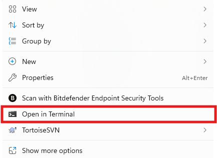
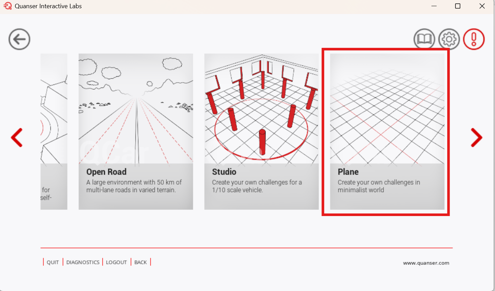
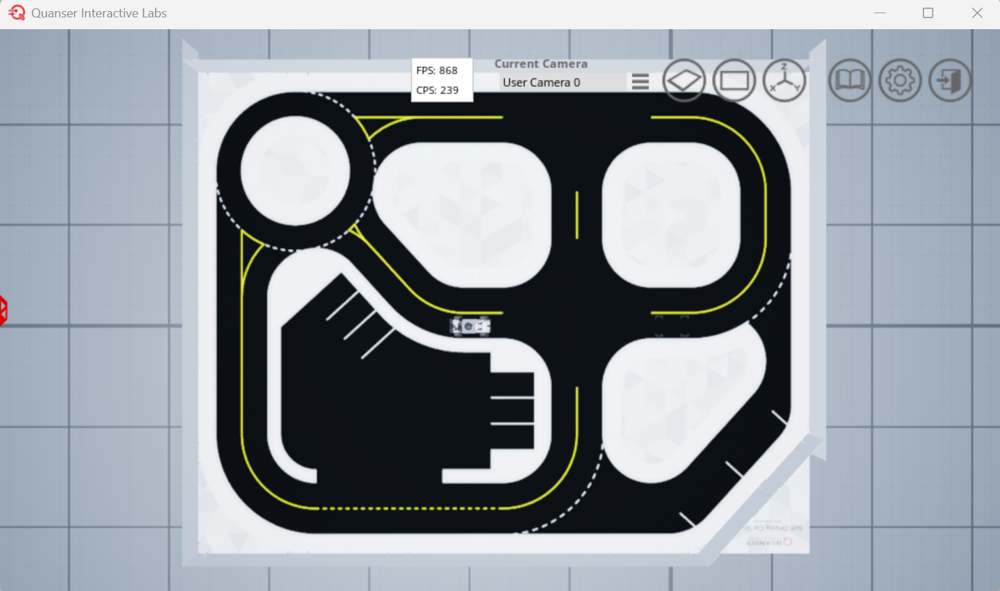
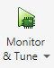

Virtual MATLAB Software Setup 🪧
Please go through the following steps to set up a computer to use the QCar with MATLAB in Quanser Interactive Labs.
Description
This document will cover the following:
- System Requirements
- Setting up Quanser Interactive Labs (QLabs) with MATLAB
- Setting Up the MATLAB Competition Resources
- Running the Self-Driving Stack Resources
By the end of this document, you will have the following development environment set up:
System Requirements
OS: Windows 10 or 11
MATLAB Version: 2024a or higher
MATLAB Toolboxes: Simulink Coder, MATLAB Coder, and Control System Toolbox
C++ Compiler: Visual Studio 2019 Community (Desktop development with C++)
Minimum Hardware:
- Graphics Card: Intel UHD or Intel Iris Xe integrated GPU, or equivalent
- Processor: Intel Core Ultra 5, Intel Core i5, AMD Ryzen 5, or equivalent
- Memory: 8 GB RAM
Recommended Hardware:
- Graphics Card: 4050m or equivalent
- Processor: i5-13500HX or equivalent
- Memory: 16 GB RAM
Note: Recommended hardware is based on the hardware used to develop and run self-driving stack in Simulink.
Setting up Quanser Interactive Labs (QLabs) with MATLAB
Follow the below steps to set up QLabs with MATLAB:
WARNING: Ensure you do not already have QUARC or Quanser Interactive Labs installed on this PC (uninstall them if you do).
-
Download the Competition License file
-
Download the QUARC 2025 SP1 Installer
-
Follow this guide to install QUARC 2025 SP1 (this will install QLabs): QUARC 2025 SP1 Installation Guide
- Use the license file (.qlic) you downloaded in Step 1 along with the guide
-
Register for QLabs on the Quanser Academic Portal
Setting Up the MATLAB Competition Resources
First, the Quanser Academic Resources will be installed:
-
Follow the instructions here to download the Quanser Academic Resources: Quanser Academic Resources Download
-
Run the following batch file with the following guidelines:
- You are using MATLAB only
- You are using both virtual and hardware
C:\Users\<username>\Documents\Quanser\1_setup\step_1_check_requirements.bat -
Run the following batch file:
C:\Users\<username>\Documents\Quanser\1_setup\configure_matlab.bat
These resources will contain all the Quanser Resources for all of Quanser's products, but the SDCS lab content will be the most relevant.
Second, the Github repo containing the student competition resources for MATLAB will be downloaded:
-
Navigate to your Documents folder within a File Explorer window
-
Open a CMD Window in this directory by right-clicking in the blank space and selecting
Open in Terminal
-
Clone the following Github Repo into the Documents folder using the following command:
bash git clone https://github.com/quanser/student-competition-resources-matlab.git
Running the Self-Driving Stack Resources
Follow the below instructions to make sure everything is set up correctly and learn how to use the provided resources:
-
Using MATLAB navigate to the
/student-competition-resources-matlab/Virtual_MATLAB_Resources/self_driving_stack_resources(make sure you double -click on folders and don't expand them) -
Open QLabs and navigate to
Self-Driving Car Studio=>Plane
-
Run the
Setup_Competition_Map.mscript- Make sure the
spawn_locationvariable is1(top of the script)
It should look like this after running the script:

- Make sure the
-
Open
QCar2_Virtual_calibrate.slx -
Use 'Monitor & Tune' to run the model

-
Change
spawn_locationto2in theSetup_Competition_Map.mscript -
Run
Setup_Competition_Map.mto spawn the QCar in the taxi hub area -
Run
Setup_QCar2_Params.m -
Open
VIRTUAL_self_driving_stack_v2.slx -
Use 'Monitor & Tune' to run the model